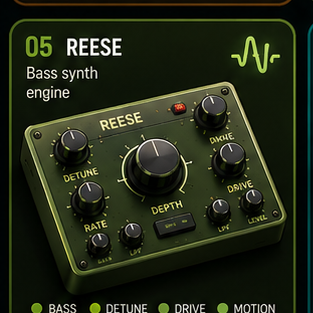

Reese
Bass page with generated audio, mini keys, and local pad memory.
Layer: bass engine plus local pad memory.
Use: play bass pads or load local audio.
Input: touch, mouse, keyboard, and MIDI-ready pads.

Bass page with generated audio, mini keys, and local pad memory.